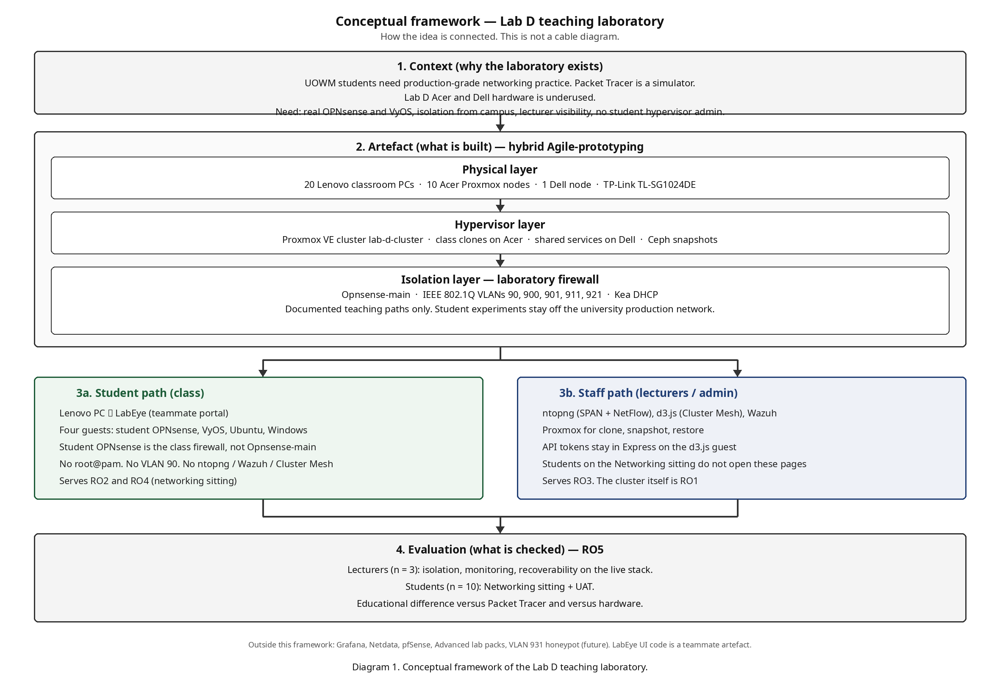
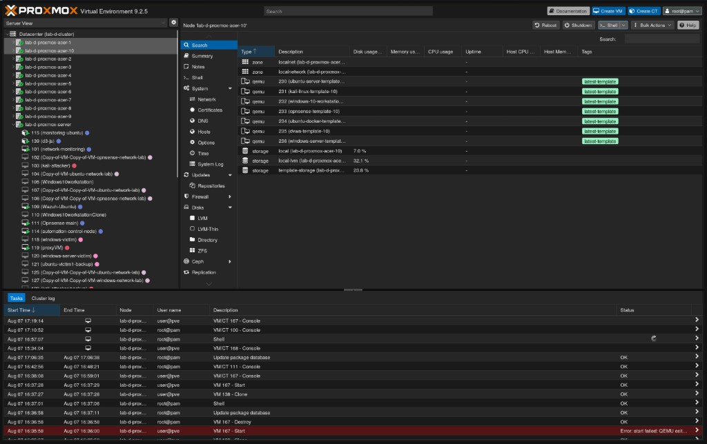
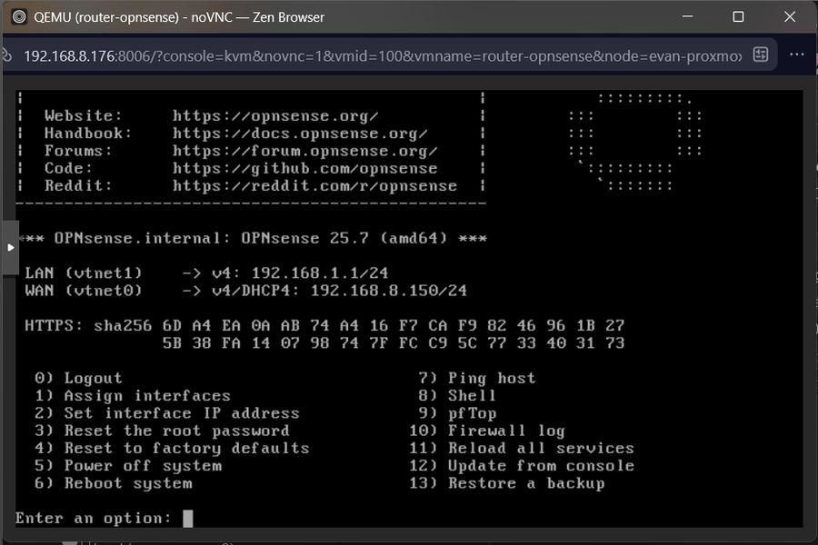
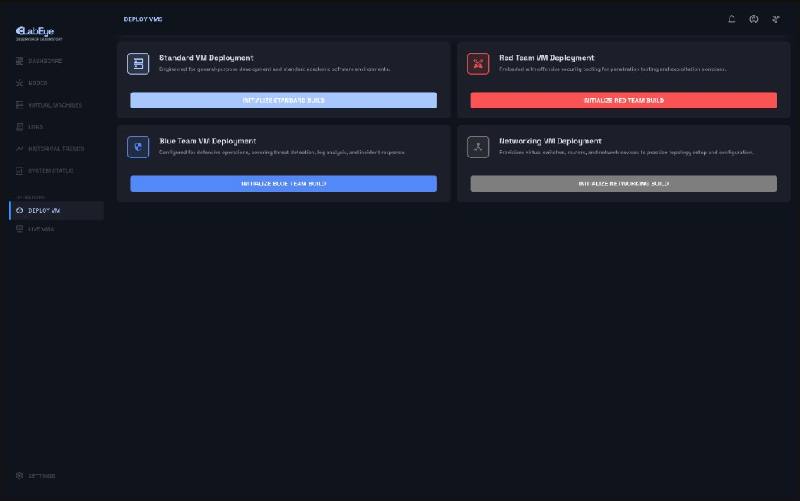
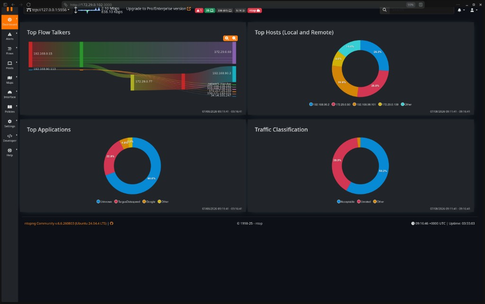
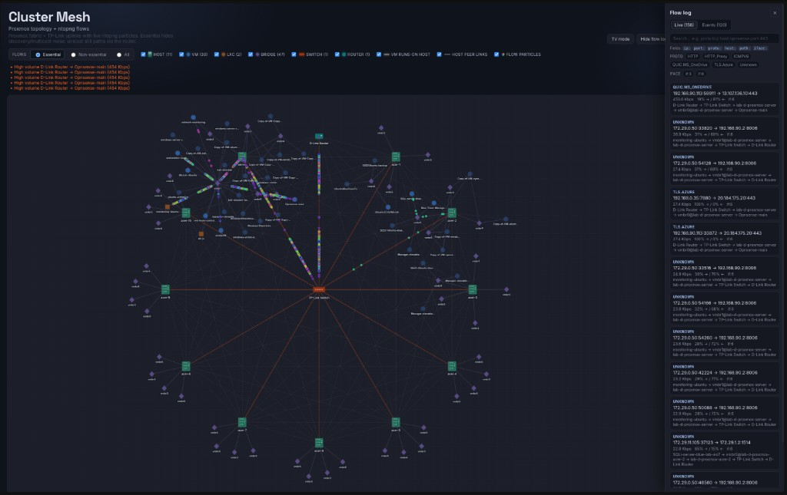
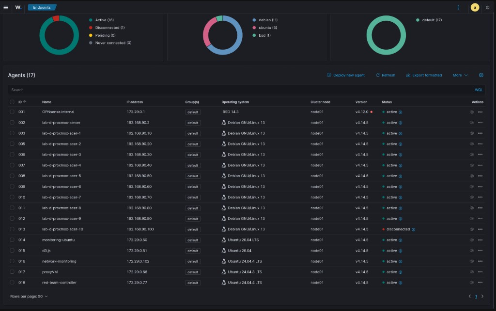

Build an on-premises Lab D cluster, not a cloud or mobile lab. Acer nodes host concurrent student VMs. The Dell node hosts shared services. IEEE 802.1Q VLANs and Opnsense-main isolate the campus LAN from the exercise fabric.
Students sit at Lenovo PCs, open LabEye (teammate portal), and configure a four-guest overlay: student OPNsense, VyOS, Ubuntu, Windows — without hypervisor administrator rights. Staff open ntopng, d3.js (Cluster Mesh), Wazuh, and Proxmox on VLAN 900. Tokens stay in Express on guest d3.js at 172.29.0.51. Grafana, Netdata, and pfSense are not used.
Intermediate is the implemented laboratory. Advanced is future work and is not claimed as a result of this sitting.
| Feature | Basic | Intermediate (this project) | Advanced (future) |
|---|---|---|---|
| Networking | Student OPNsense: DHCP, DNS, and NAT; ping between hosts | LabEye four-guest overlay: student OPNsense, VyOS static routing, Ubuntu Server, and Windows | Policy-based routing, VPN tunnels, multisite topology |
| Security | Isolated student overlay; default deny between exercise VLANs | IEEE 802.1Q VLANs 90, 900, 901, 911, and 921. Documented teaching paths only. University LAN blocked from staff dashboards. | VLAN 931 honeypot class; standing red/blue sitting |
| Monitoring | Staff open ntopng and see live traffic | SPAN on switch port 18 plus NetFlow into ntopng; d3.js (Cluster Mesh); Wazuh on the infrastructure plane. Students do not open these pages. | Student-facing observability exercise |
| Network labs | Guided ping and NAT on the four-guest combination | One Networking exercise from Lenovo PCs through LabEye. Students configure OPNsense and VyOS without hypervisor administrator rights. | Extra lab packs: pen-test, IDS/IPS, SOC-style sittings |
| Firewall | Student OPNsense rules on the overlay | Opnsense-main as the laboratory firewall and Kea DHCPv4 server; a disposable student OPNsense in each LabEye combination | IDS/IPS tuning; extra VPN gateway |
| Documentation | Author setup notes | Report plus physical and logical topology diagrams. A standing student handbook is not yet an operating product. | Standing lab manuals and video walkthroughs |
| No. | Research question | Objective | Methods | Expected outcome |
|---|---|---|---|---|
| RQ1 | How can Lab D hardware become a multi-node open-source education platform? | RO1 — Proxmox VE cluster on Lab D hardware | LiteratureDeploy | Operational cluster on Acer + Dell nodes; documented topology. |
| RQ2 | How realistic is OPNsense + VyOS versus Packet Tracer or hardware? | RO2 — Student overlay without hypervisor admin | ObservationQuestionnaire | Students configure the LabEye four-guest overlay from Lenovo PCs. |
| RQ3 | Can lecturers observe ntopng, Cluster Mesh, and Wazuh off the student path? | RO3 — Lecturer observability | Lecturer cases | Staff open those tools on VLAN 900. Networking students do not. |
| RQ4 | Which guided networking exercises work at higher skill levels? | RO4 — Guided labs Basic / Intermediate / Advanced | Lab sheetsSitting | One Networking sitting. Advanced packs remain future work. |
| RQ5 | How usable is the platform for mixed prior experience? | RO5 — Student UAT | SurveyUAT | UAT data and comments after the Networking exercise. |
| — | Documentation is an objective without a numbered question. | RO6 — Report and diagrams | Report | Final report and topology diagrams. Handbook still a product gap. |
Design Science Research Methodology (identify, design, implement, evaluate). Hybrid Agile-prototyping inside that loop: infrastructure, then isolation, then observability, then the LabEye overlay, then evaluation.
| Platform | Type | Limitation for this lab | Selected? |
|---|---|---|---|
| Cisco Packet Tracer | Simulator | Cisco-only; no real OS firewalls; limited realism for enterprise/security scenarios | — |
| GNS3 / EVE-NG | Emulator | Complex setup; images or licences; high hardware demand | — |
| TryHackMe / HackTheBox | Cloud lab | No infrastructure ownership; weak networking-engineering focus | — |
| Lab D (this project) | On-prem cluster | Needs a handbook and a staffed first sitting; Advanced packs not run | ✓ SELECTED |

Context (unused Lab D hardware) leads to the artefact: Proxmox cluster, then Opnsense-main. Students open LabEye and configure the four-guest overlay without hypervisor admin. Lecturers open ntopng, d3.js (Cluster Mesh), Wazuh, and Proxmox. LabEye is the teammate portal; Cluster Mesh is this author’s visualisation. Grafana, Netdata, and pfSense sit outside the framework. Click the diagram to enlarge.
lab-d-cluster on Acer nodes and the Dell node. Class clones on Acer. Shared services on Dell. Twenty Lenovo seats.
Four-guest LabEye combination exists. 7/10 routed Ubuntu and Windows to OPNsense. 9/10 still needed help. VyOS was the hard step.
Lecturers opened ntopng, Cluster Mesh, and Wazuh (3/3 Pass). Students did not open those pages in UAT.
One Networking sitting at Basic/Intermediate. Advanced packs were not a Chapter 7 class.
n = 10 consented. Strongest Likert: prefer this lab to a textbook (8/10). Weakest: fix mistakes without help.
Report and topology diagrams exist. A standing student handbook is still a product gap.
| Group | n | What was tested | Outcome |
|---|---|---|---|
| Lecturers | 3 | Isolation, ntopng, Cluster Mesh, Wazuh, Proxmox / Ceph | All functional cases Pass (3/3) |
| Students | 10 consented | LabEye Networking sitting + UAT form | 7/10 hit the routing goal; 9/10 needed a person in the room |
Versus Packet Tracer: usually more realistic, not easier. Versus hardware: only two testers had used hardware, so that comparison is too small to conclude. The remaining gap is a handbook and a staffed first sitting, not another dashboard.






This is the networking and isolation layer. If the cluster, VLANs, and Opnsense-main are not up, the other FYP projects have nowhere safe to land. 1A’s images clone onto this fabric. 1C’s automation pushes guests onto these nodes. 2A/2B/2C watch or attack across these VLANs. 3A’s honeypot is planned as VLAN 931 on the same switch. LabEye is the class door; Cluster Mesh, ntopng, and Wazuh are how staff see whether isolation is holding.